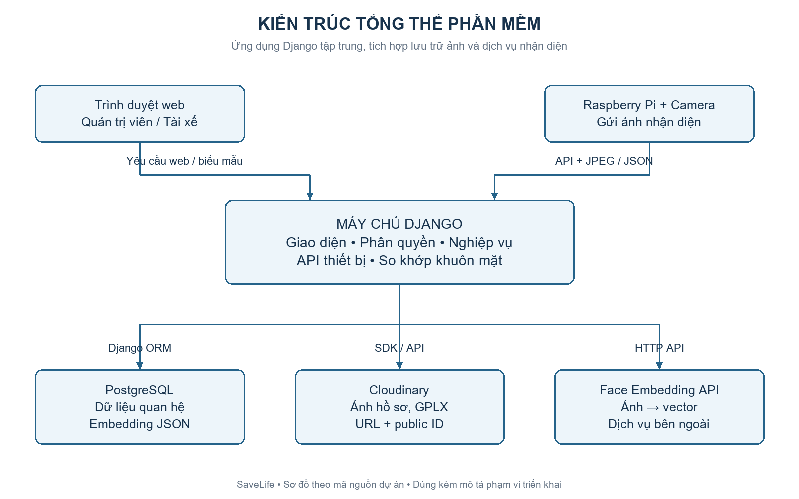
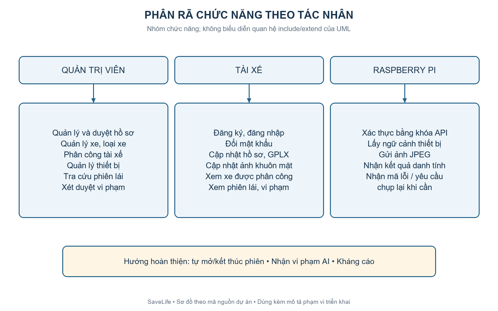
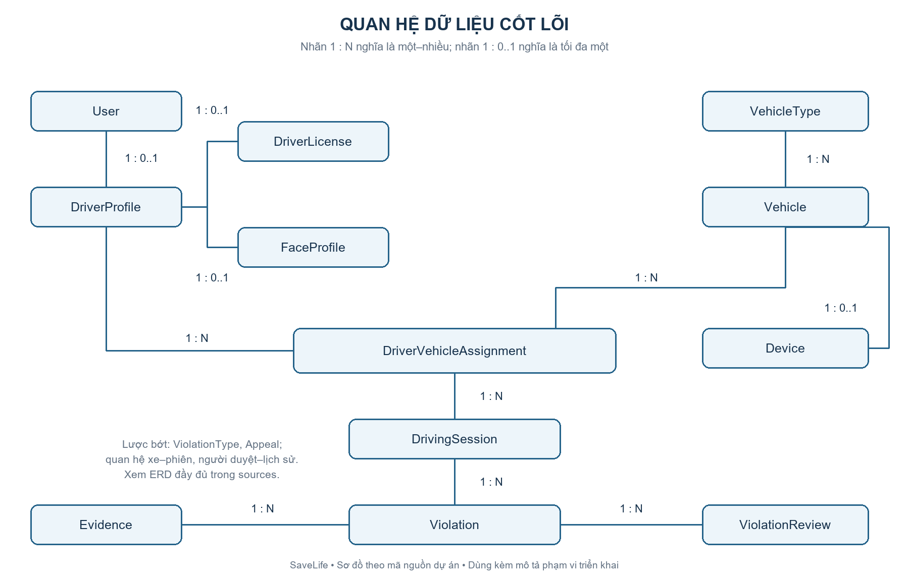
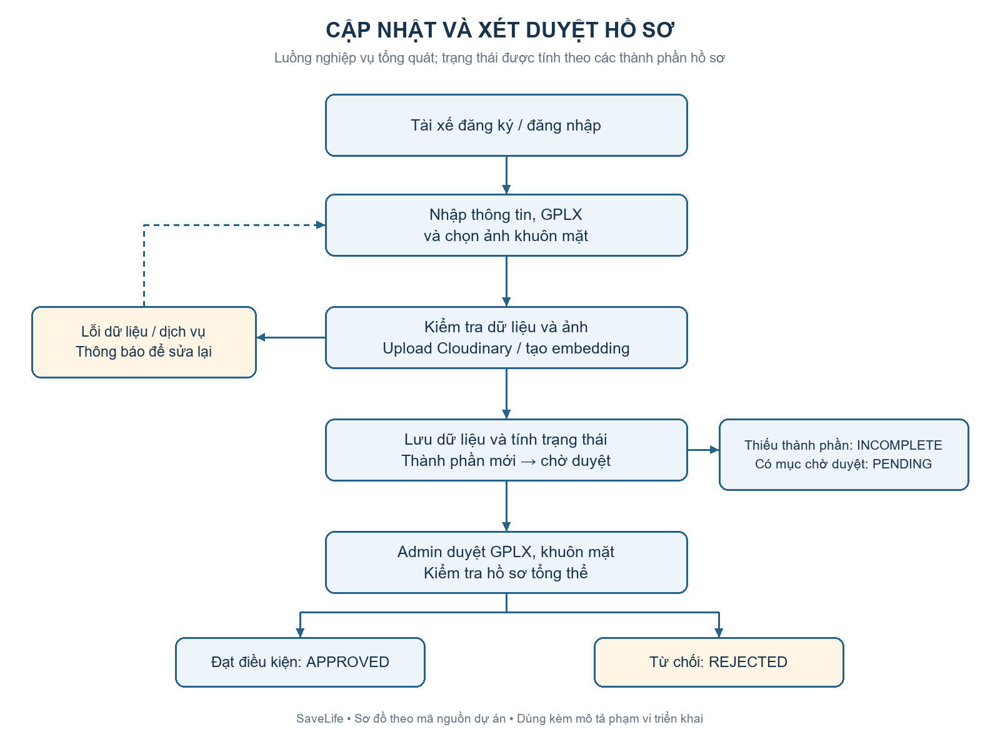
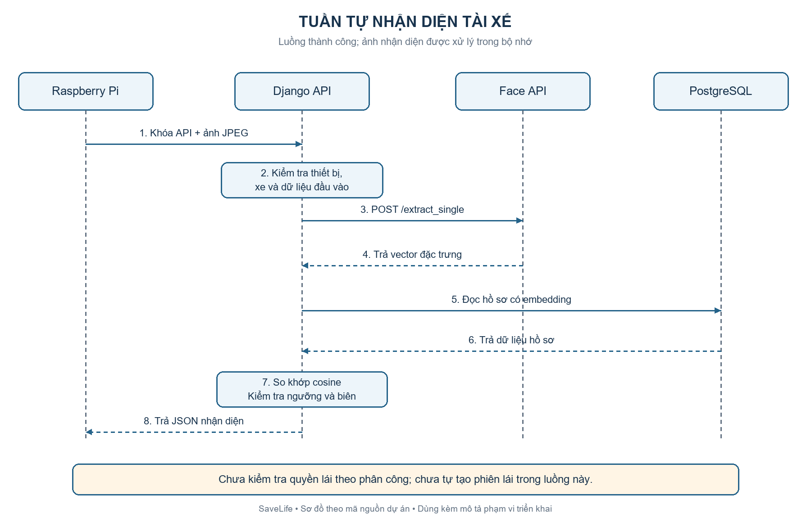
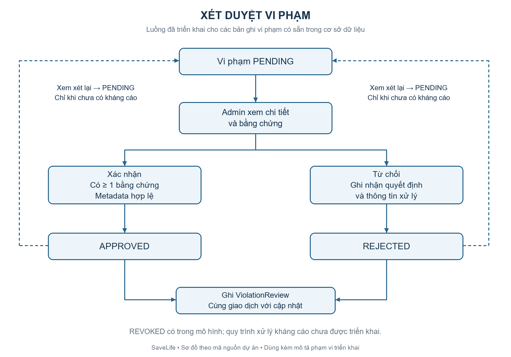

Bộ sơ đồ mục 2.4 – SaveLife
Mở bản Word để lấy nội dung và hình đã chèn. PNG dùng trực tiếp; SVG có thể phóng to; Mermaid dùng để chỉnh sửa.

01_kien_truc — PNG · SVG · Mermaid
02_chuc_nang — PNG · SVG · Mermaid
03_du_lieu — PNG · SVG · Mermaid
04_ho_so — PNG · SVG · Mermaid
05_nhan_dien — PNG · SVG · Mermaid
06_vi_pham — PNG · SVG · Mermaid